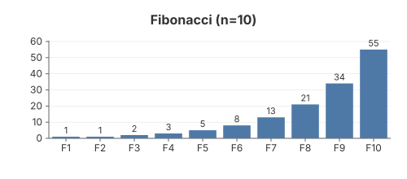
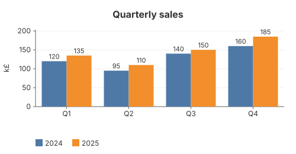

04 — Bar Chart
A vertical bar chart: one bar per category, category labels on the X axis, the value printed above each bar, and a Y axis that always starts at zero. Adding a second series groups the bars side by side within each category.


The code
chart := gogal.NewBarChart(
gogal.WithTitle("Fibonacci (n=10)"),
gogal.WithSize(500, 220),
gogal.WithYFormat("%.0f"),
)
chart.AddCategories("Fibonacci",
[]string{"F1", "F2", "F3", "F4", "F5", "F6", "F7", "F8", "F9", "F10"},
[]float64{1, 1, 2, 3, 5, 8, 13, 21, 34, 55})
svg, _ := chart.RenderString()
AddCategories(name, categories, values) takes parallel slices. The categories become the X-axis labels; call it once per series to get grouped bars.
Baseline at zero. Unlike line charts, the Y scale always includes 0 so bar heights compare honestly. Negative values hang below the baseline. A little headroom is reserved above the tallest bar for its value label.
WithValueLabels(false) turns off the value printed above each bar. Hovering a bar dims it slightly — pure CSS, no JavaScript.
Sparkline bars.
NewBarChart(gogal.WithVariant(gogal.Sparkline)) renders a bare 100×20 bar strip with no axes, for inline use in tables.
Running it
task example:04
Outputs SVG to stdout and serves at http://localhost:1343.
API reference
| Function | Purpose |
|---|---|
NewBarChart(opts...) |
Vertical bar chart |
AddCategories(name, categories, values) |
One series; repeat for grouped bars |
WithValueLabels(on) |
Print each value above its bar (default on) |
WithYFormat(fmt) |
Y-axis tick format (Printf) |
Horizontal and stacked bars are not yet implemented — see the ROADMAP.